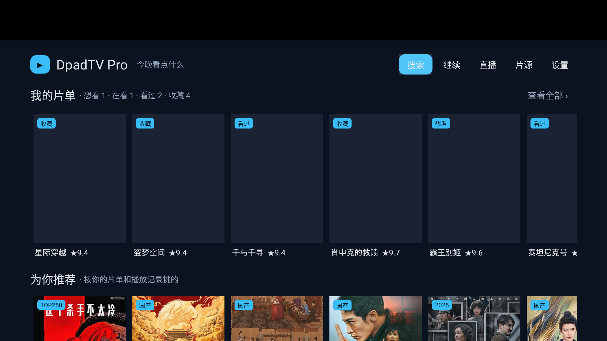
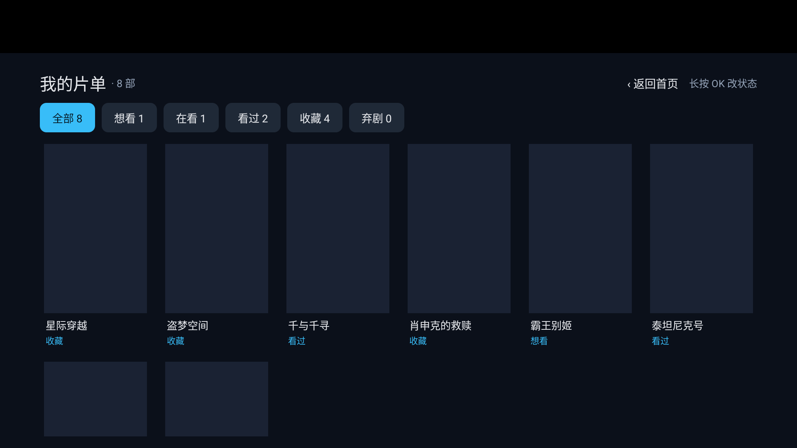

推荐只用你自己的行为；豆瓣接口全程没碰（侧车已切只读缓存模式）
| 层 | 做法 | 为什么这么定 |
|---|---|---|
| 信号 | 片单四态 + 播放次数（ev 表），收藏 1.0 / 在看 0.9 / 看过 0.8 / 想看 0.5 / 弃剧 −0.6，30 天半衰 | 不猜类型标签——一猜就得再打豆瓣，而豆瓣是最脆的一环 |
| 特征 | 只用「来自哪个榜 + 评分 + 年份」，这些本地一定有 | 零额外请求，断网也能算 |
| 打分 | 来源亲和 0.45 / 评分 0.30 / 新鲜 0.15 / 基础 0.10 | 避免变成"再来一屏 9 分老片" |
| 重排 | MMR（λ=0.35）：同年同评分档相似度 1.0，会被压下去 | 多样性是推荐的底线，不是加分项 |
| 门槛 | 信号 < 8 整行不出现 | 一行平庸的推荐比没有更伤 |
| 级别 | 问题 | 修法 |
|---|---|---|
| P0 | 首页一个导航入口都没有 M1 换首页时把 搜索/继续/直播/片源/设置 全丢了，电视没有地址栏 = 被锁死 | 顶部常驻导航胶囊，焦点可见 |
| P0 | 浏览页 / 片单页只能按 BACK 出 | 两页都加「‹ 返回首页」 |
| P0 | 触摸点一次没反应，要再点一次 | isFocusableInTouchMode=false：点一下即触发 |
| P0 | 启动弹「网络失败：no such column: source」 | 迁移漏列 → 补列 + v3 兜底 |
| P1 | 搜索页一进来就弹全屏键盘 | 焦点给列表，用户主动选输入框才起键盘 |
| P1 | 横屏输入法「全屏提取」把整页盖成白色 | IME_FLAG_NO_EXTRACT_UI |
| P1 | 标语「豆瓣榜单·合并货架」是内部术语 | 改成「今晚看点什么」 |
| P1 | 侧车报限流时客户端还回退直连（二次打击） | 限流那轮不走直连 |
| P1 | 片单只有一两部时行尾一大片空 | 补「长按海报加入」占位 |
| P2 模拟器顶部 128px 黑边 | phone 系统镜像的 StatusBar，真电视没有；已顺手加 setDecorFitsSystemWindows(false) |
| P2 搜索进度条是系统白条 | 与深色主题不搭，打磨阶段统一 |
| P2 详情页 / 设置页仍是上游风格 | 改造半径大，留到打磨阶段 |
| P2 继续观看行、看过自动判定、1280 宽屏 | 未做 / 未验 |

